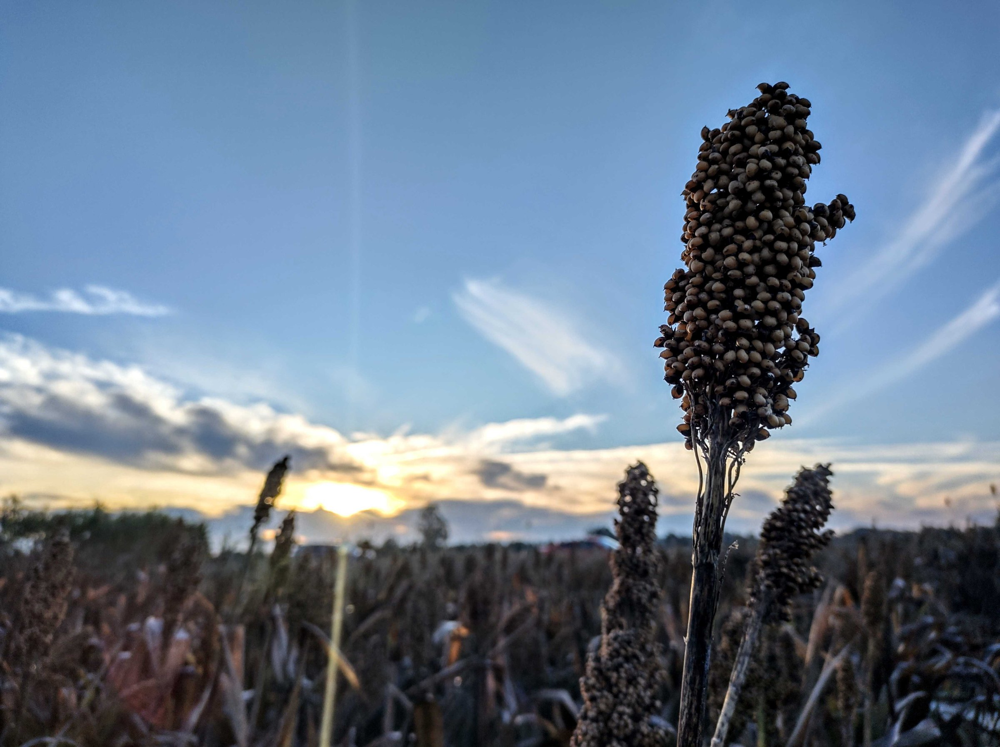
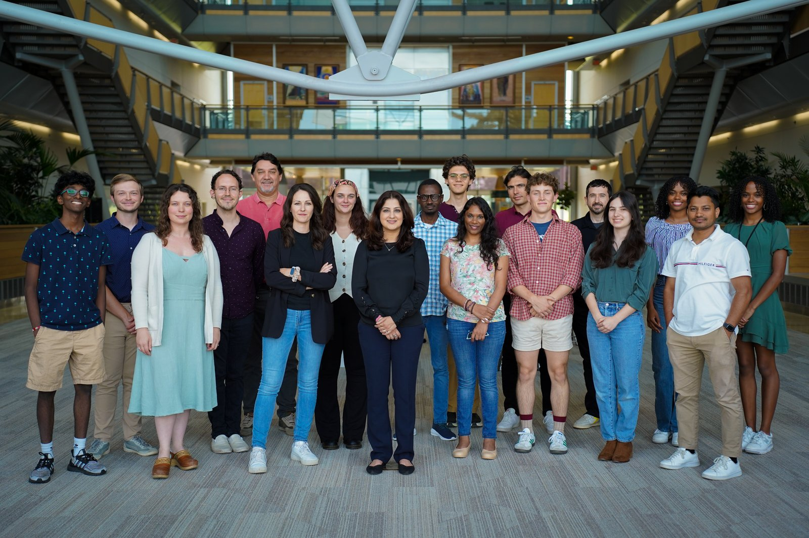

Thanks for scanning our QR code! Our group is presenting six posters and a talk this week spanning AI-enabled phenotyping, genomics, and field trial management in sorghum. Here's the full lineup.

Sorghum field at golden hour · Danforth field site
We're part of the Shakoor Lab at the Donald Danforth Plant Science Center in St. Louis, Missouri, working on high-throughput phenotyping, genomics, and data integration in sorghum. This page rounds up everything our team is presenting at this year's conference — stop by any of our posters to chat, or reach out afterward.

Nadia Shakoor, PhD
Principal Investigator · Donald Danforth Plant Science Center — Co-founder & Chief Scientific Officer, Agrela Ecosystems
Researcher and Founder: Building Commercial Technology Without Leaving Science
Theme 4: Emerging technologies and their application potential – commercialization opportunities for the sorghum industry
Dr. Shakoor bridges sorghum genomics, field phenotyping, digital agriculture, and technology commercialization. She has directed major initiatives including the Gates Foundation-funded Sorghum Genomics Toolbox and DOE's ARPA-E TERRA-REF project, is a corresponding senior author of the 2026 Nature sorghum pangenome, and co-founded Agrela Ecosystems, maker of the PheNode environmental sensing platform.
Have a question about the poster, or just want to say hi? I'd love to hear from you — send me a note and I'll get back to you after the conference.